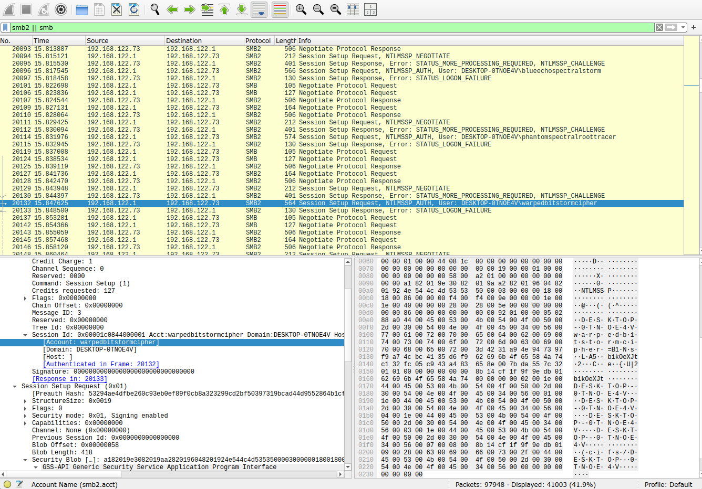
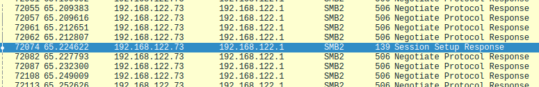
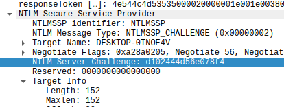
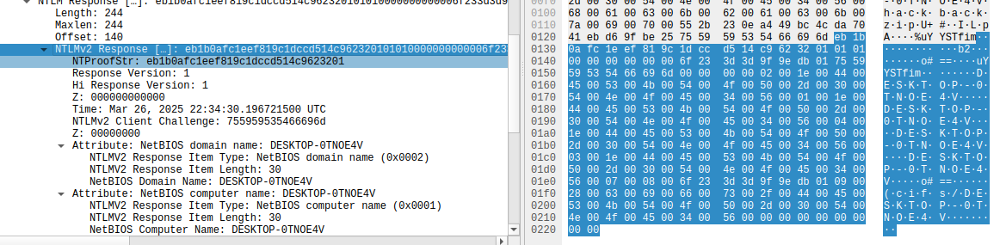

MuddyWater
For this challenge, we have to analyze a 35 megabyte PCAP file. Opening it up on
Wireshark, it's possible to see that it has over 95.000 entries, 42% of them are
related to the SMB / SMB2 protocols. There are a bunch of sequential
authentication attempts with a lot of different usernames. This challenge's flag
requires a username and a password, therefore, there has to be a user here that
did go through the authentication process.

After all the requests, there is always a response with the error
STATUS_LOGON_FAILURE. This error comes from the NT Status value, in this case,
0xc000006d. Looking at the documentation, the success code is 0x00000000. Using
the Wireshark filter smb2.nt_status == 0x00000000, we can see all the responses
that didn't error out. This query will return 9110 entries, it's still a lot.
Every entry is similar and is related to the protocol negotiation, except one:

And this entry also has the account and domain: hackbackzip and DESKTOP-0TNOE4V
respectively. Taking into account the nature of NTLMv2, there won't be any kind
of passwords in plain text here. So the next step is to actually build the
necessary string for it to serve as the input into a password cracker. It has
the following format:
username::domain:challenge:NTProofStr:blob
We already got the username and the domain. The challenge is in a previous
request that has an error like NTLMSSP_CHALLENGE:

And the NTProofStr and the blob are in the NTLMSSP_AUTH request of the user
hackbackzip:

This is the resulting string, that should be put in an empty text file in a single line:
hackbackzip::DESKTOP-0TNOE4V:d102444d56e078f4:eb1b0afc1eef819c1dccd514c9623201:01010000000000006f233d3d9f9edb01755959535466696d0000000002001e004400450053004b0054004f0050002d00300054004e004f0045003400560001001e004400450053004b0054004f0050002d00300054004e004f0045003400560004001e004400450053004b0054004f0050002d00300054004e004f0045003400560003001e004400450053004b0054004f0050002d00300054004e004f00450034005600070008006f233d3d9f9edb010900280063006900660073002f004400450053004b0054004f0050002d00300054004e004f004500340056000000000000000000
Now it's only a matter of using a password cracker with a decent word list. I
recommend the rockyou.txt word list:
john --format=netntlmv2 account.txt --wordlist=rockyou.txt